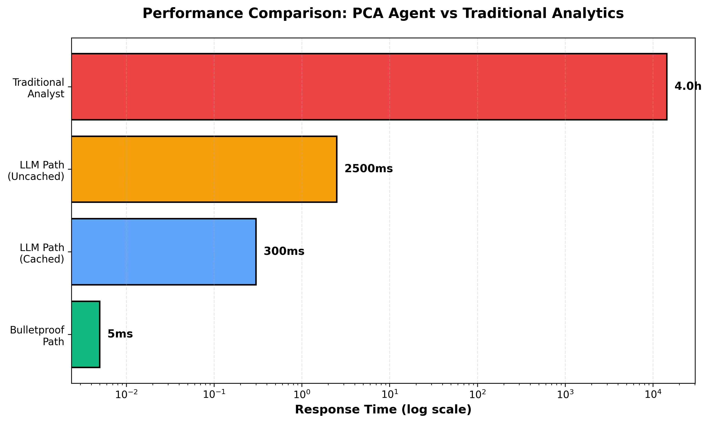

January 2026
CHAPTER 7
LAYER 5: VISUALIZATION & PRESENTATION
Navigation: ← Chapter 6 | Index | Next: Chapter 8 →
Layer 5 is the “Graphics Department” of the PCA Agent. It takes the structured data from Layer 3 and the insights from Layer 4 and transforms them into beautiful, interactive, and meaningful visualizations.
Office Analogy - The Graphics Department:
Imagine you have a team of presentation experts. After the analysis team finishing their report, they hand it over to the graphics department.
The graphics team: 1. Reviews the data (what story are we telling?) 2. Selects the right format (Bar chart? Line graph? Gauge?) 3. Applies branding (consistent colors and fonts) 4. Ensures interactivity (making sure the user can explore the chart)
They turn a boring list of numbers into a clear, visual story that anyone can understand at a glance.
Time: ~100-300ms
Input: Data from Layer 3 + Insights from Layer 4
Output: Interactive Plotly/JSON chart objects
Choosing the right chart isn’t just about aesthetics; it’s about clarity. The PCA Agent uses specific logic to determine the best visual for every query.
| Data Type | Purpose | Best Chart Type |
|---|---|---|
| Time Series | Showing trends over time | Line Chart (Smooth) |
| Categorical | Comparing different items | Bar Chart (Grouped) |
| Part of Whole | Showing proportions | Pie or Donut Chart |
| Performance vs Target | Showing progress to goal | Gauge or Indicator |
| Multi-Metric Comparison | Showing relationships | Multi-Axis Composite Chart |
| Funnel Flow | Showing drop-off rates | Funnel Chart |
Office Analogy - The Design Director:
This component acts like a Design Director who looks at the data and says: “This is a comparison of 5 different campaigns; a grouped bar chart will make the differences obvious.”
The Chart Selector analyzes the intent and data shape to choose the visual:
def select_chart_type(data, intent):
if intent == "TREND" and "date" in data.columns:
return "line_chart"
elif intent == "COMPARISON" and len(data) < 10:
return "bar_chart"
elif intent == "DISTRIBUTION":
return "pie_chart"
elif len(data) == 1:
return "indicator"
return "bar_chart" # DefaultThe system uses Plotly, an industry-standard library, to generate interactive charts. These aren’t just static images—they are dynamic objects the user can interact with.
Design Principle - Visual Excellence:
We don’t use generic browser colors. The PCA Agent uses a curated palette designed for modern business analytics (Sleek blues, vibrant greens for success, and clear alarming reds for issues).
Color Palette: - Primary Blue (#2563eb): Main data series, trust and stability. - Success Green (#10b981): Growth, positive trends, targets met. - Warning Amber (#f59e0b): Approaching thresholds, minor issues. - Critical Red (#ef4444): Performance drops, budget overruns.
When a user asks “What is my CPA?”, Layer 5 doesn’t just show a number. It creates a Gauge Chart.
Office Analogy - The Car Speedometer:
A number like “12.5” is just a number. But a speedometer showing that 12.5 is in the “green zone” (below the $15 limit) tells you instantly that you are safe.
Features of the Gauge: - The Needle: Shows current performance. - Color Zones: Green (Great), Yellow (Warning), Red (Action Required). - Context: Displays the target value next to the current value.

Despite the complexity of generating interactive visuals, Layer 5 is optimized for speed: - Server-side schema generation: The “blueprint” of the chart is created on the backend. - Client-side rendering: Your browser does the final “drawing,” ensuring it feels fast and responsive. - Caching: Common chart templates are cached to save time.
✅ Layer 5 makes data understandable - turns numbers into stories
✅ Smart Selection - automatically chooses the best chart for the data
✅ Plotly Integration - provides high-end interactivity
✅ Branded Aesthetics - consistent, professional look and feel
✅ Optimized Speed - ~100-300ms typical rendering time
Remember: Layer 5 is like your company’s Graphics Department—they ensure that the brilliant analysis from Layer 4 is presented so beautifully and clearly that an executive can understand the situation in three seconds.
Navigation: ← Chapter 6 | Index | Next: Chapter 8 →